전자기기기능사 (2002-04-07 기출문제)
1과목: 전기전자공학
1. 정전용량의 역수를 무엇이라고 하는가?
- 리액턴스
- 지멘스
- 엘라스턴스
- 커패시턴스
(정답률: 57%)

2. 가전자에 대한 설명 중 옳은 것은?
- 가전자는 양자핵에 가장 가까운 전자이다.
- 가전자는 전류의 캐리어가 아니다.
- 가전자는 원자의 가장 외각에 위치하며 전류의 캐리어이다.
- 모든 물질의 가전자 수는 같다.
(정답률: 73%)
3. 그림과 같은 여파기는?
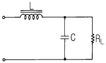
- 콘덴서 여파기
- π형 여파기
- LC 여파기
- 다단 LC 여파기
(정답률: 74%)
4. 임피던스정합이 필요한 이유는?
- 전압이득을 적게 하기 위하여
- 고주파 특성을 개선하기 위하여
- S/N을 개선시키기 위하여
- 회로의 손실을 적게 하기 위하여
(정답률: 36%)
5. 그림과 같은 연산증폭기는?(단, Ri=Rf, 연산증폭기는 이상적인 것으로 본다.)
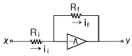
- 상배수기
- 부호변환기
- 곱셈기
- 전위차계
(정답률: 81%)
6. 반송파 fc와 신호파 fs인 두 신호를 링(ring)변조 시켰을 때 출력주파수 성분은?
- fc+fs
- fc-fs
- fc±fs
- 2(fc±fs)
(정답률: 63%)
7. 그림은 펄스파를 확대하여 나타낸 그림이다. 여기에서 a는 무엇이라 하는가?
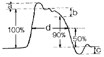
- 언더슈트
- 스파이크
- 오버슈트
- 새그
(정답률: 84%)
8. 회로는 RS-FF이다. D-FF으로 변환하려면 어떻게 하여야 하는가?
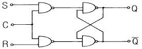
- Q'를 S에, Q를 R에 궤환시키고 S를 D로 대체한다.
- Q'를 AND를 통하여 S에 궤환하고 S를 D로 대체한다.
- S에서 NOT를 통하여 R에 연결하고 S를 D로 대체한다.
- Q'를 S에 궤환시키고 S를 D로 대체한다.
(정답률: 52%)
9. 그림에서 출력 Y 는?
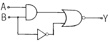
- A'B
- AB+B'
- (AB)'+B
- A'+BB
(정답률: 32%)
10. 그림과 같은 전원회로에서 C1, C2 및 CH 는 직류분과 교류분에 대하여 어떤 역할을 하는가?
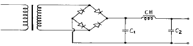
- C1, C2의 역할:직류분 통과, CH의 역할:교류분 통과
- C1, C2의 역할:교류분 통과, CH의 역할:직류분 통과
- C1, C2의 역할:교류분 저지, CH의 역할:직류분 저지
- C1, C2의 역할:직류분 저지, CH의 역할:교류분 통과
(정답률: 52%)
11. 그림에서 AD점사이의 합성저항은 몇 Ω 인가? (단, 각 저항의 값은 8Ω이다.)
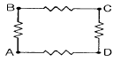
- 6
- 9
- 24
- 32
(정답률: 37%)
12. 입력전압이 2V이고 출력전압이 2㎷인 대칭 4단자망의 감쇠상수는 몇 ㏈ 인가?
- 60
- 80
- 100
- 120
(정답률: 37%)
13. 트라이액(TRIAC)의 설명 중 옳은 것은?
- 기동시 전력소모가 크다.
- 게이트 전류가 (+)일 때만 트리거 시킬 수 있다.
- 게이트 전류가 (-)일 때만 트리거 시킬 수 있다.
- 게이트 전류가 (+)또는 (-)의 어느값 이상이면 트리거 시킬 수 있다.
(정답률: 58%)
14. 4Ω의 저항과 8mH의 인덕턴스가 직렬로 접속된 회로에 60Hz, 100V의 교류전압을 가하면 전류는 몇 A 인가?
- 20
- 25
- 30
- 35
(정답률: 35%)
15. 단일 주파수로서 100% 변조한 진폭변조파의 반송파와 상하측파대의 전력비는?
- 1 : 1/2 : 1/2
- 1 : 1/3 : 1/3
- 1 : 1/4 : 1/4
- 1 : 2 : 2
(정답률: 44%)
2과목: 전자계산기일반
16. 그림(a)의 회로에서 출력전압 V2와 입력전압 V1과의 비와 주파수의 관계를 조사하면 그림(b)와 같다. 이때 저역차단주파수 fL은 몇 Hz 인가?
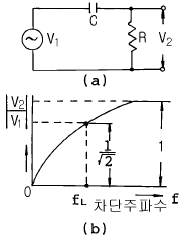
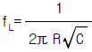
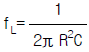
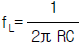
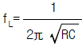
(정답률: 41%)
17. 컴퓨터의 용량 1kbyte는 몇 byte인가?
- 1000
- 1013
- 1023
- 1024
(정답률: 84%)
18. 실수(-25)10를 밑수 2의 부동소수점으로 표현할 때의 부호, 지수부, 소수부는 각 각 얼마인가?
- 0, 101, 11001
- 0, 101, 10101
- 1, 101, 11001
- 1, 101, 10101
(정답률: 51%)
19. 다음의 논리연산 명령어 중 어큐뮬레이터의 값이 변하지 않는 것은? (단, 여기서 X는 임의의 8bit data이다.)
- CP X
- AND X
- OR X
- XOR X
(정답률: 63%)
20. ALU(Arithmetic and Logical Unit)의 기능은?
- 데이터의 기억
- 사칙연산
- 명령 내용의 해석 및 실행
- 연산 결과의 기억될 주소 산출
(정답률: 59%)
21. 컴퓨터와 오퍼레이터 사이에 필요한 정보를 주고 받을 수 있는 장치는?
- 자기디스크
- 라인프린터
- 콘솔
- 데이터 셀
(정답률: 67%)
22. 2진수 10101101을 16진수로 표현한 것은?
- BC
- DE
- AD
- AE
(정답률: 73%)
23. 마이크로컴퓨터 내부에서 마이크로프로세서와 주기억장치 및 각 주변장치 모듈 간에는 버스(BUS)를 통해 정보를 전달한다. 이 버스에 해당하지 않는 것은?
- data bus
- address bus
- register bus
- control bus
(정답률: 63%)
24. 운영체제로 컴퓨터의 동작 상태를 감독하고, 처리 프로그램의 실행 과정을 제어해 주는 소프트웨어는?
- 감시 프로그램
- 응용 프로그램
- 데이터 관리 프로그램
- 작업 관리 프로그램
(정답률: 40%)
25. 인스트럭션을 수행하기 위해 중앙처리장치 내부에서 실행하는 것은?
- 마이크로 오퍼레이션 동작
- 제어 동작
- 인출(fetch)
- 재배치
(정답률: 42%)
26. 운영체제(Operating System)가 아닌 소프트웨어는?
- UNIX
- WINDOWS 98
- MS-DOS
- Or-CAD
(정답률: 80%)
27. 그림과 같은 흐름도(FLOW CHART)는 어떤 형인가?
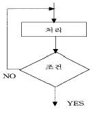
- 분기형
- 순차 직선형
- 직선형
- 루프형
(정답률: 63%)
28. 스택은 어느 어드레스 명령어 형식에 해당하는가?
- 0
- 1
- 2
- 3
(정답률: 59%)
29. 진공관 전압계로 고주파 전압 측정시 생기는 일반적 오차가 아닌 것은?
- 전자주행시간 오차
- 입력용량 오차
- 공진 오차
- 표피 오차
(정답률: 47%)
30. 오실로스코프(Oscilloscope)의 음극선관(Cathode Ray Tube)의 주요 부분이 아닌 것은?
- 전자총
- 편향판
- 형광막
- 발진기
(정답률: 46%)
3과목: 전자측정
31. 전류계로 사용할 수 없는 계기는?
- 열전형
- 유도형
- 전류력계형
- 정전형
(정답률: 36%)
32. 다른 측정법에 비해 전기 계측이 갖고 있는 특징이 아닌 것은?
- 측정의 정도와 안정도가 높다.
- 측정할 때 시간 지연은 많으나 변동이 급격한 양도 연속 측정이 가능하다.
- 측정하려는 양의 기록이나 적산이 쉽다.
- 원격 측정이 가능하며, 측정의 집중 관리가 쉽다.
(정답률: 57%)
33. 다음 그림에서 R의 값은?
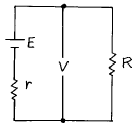
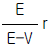
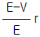
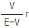
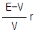
(정답률: 34%)
34. 안테나의 실효 저항은 희망주파수에서 공진시킨 상태에서 측정해야 한다. 실효 저항 측정법이 아닌 것은?
- 저항 삽입법
- 작도법(Pauli의 방법)
- coil 삽입법
- 치환법
(정답률: 64%)
35. 비트법을 이용한 고주파 주파수계는?
- 레헤르선 파장계
- 그리드 딥 메터
- 헤테로다인 주파수계
- 흡수형 파장계
(정답률: 62%)
36. 계수형 주파수계로 1분 동안 반복 회수가 2160회 였다면 피측정 주파수는 몇 [Hz]인가?
- 18
- 36
- 360
- 2160
(정답률: 65%)
37. 절연물의 유전체 손실각을 측정하는데 쓰이는 브리지는?
- 맥스웰 브리지(Maxwell bridge)
- 셰링 브리지(Schering bridge)
- 하트숀 브리지(Hartshorn bridge)
- 헤이 브리지(Hay bridge)
(정답률: 70%)
38. 안정된 고주파 발진기로 적합한 것은?
- 비트 발진기
- 수정 발진기
- 음차 발진기
- CR 발진기
(정답률: 65%)
39. 고주파 전력을 측정하는 방법 중 콘덴서를 사용하여 부하 전력의 전압 및 전류에 비례하는 양을 구하고, 열전쌍의 제곱 특성을 이용하여 부하 전력에 비례하는 직류 전류를 가동 코일형 계기로 측정하도록 한 전력계는?
- C-C형 전력계
- C-M형 전력계
- 볼로미터 전력계
- 의사 부하법
(정답률: 55%)
40. 디지털 계측 방식 중 디지털 계수에 의한 측정 장치의 구성이 아닌 것은?
- A/D 변환기
- 파형 정형 회로
- 게이트
- 계수기
(정답률: 40%)
41. 공기 중에 떠 있는 먼지나 가루를 제거하는 장치에 초음파 응용기기를 사용하는데, 이것은 초음파의 어느 작용을 응용한 것인가?
- 응집작용
- 캐비테이숀
- 확산작용
- 에멀션화작용
(정답률: 70%)
42. 유도가열의 특징으로 거리가 먼 것은?
- 가열속도가 빠르다.
- 필요한 부분에 발열을 집중시킬 수 있다.
- 금속의 표면가열이 매우 어렵게 이루어진다.
- 가열을 정밀하게 조절할 수 있다.
(정답률: 77%)
43. 프로세스 제어는 어느 제어에 속하는가?
- 추치 제어
- 속도 제어
- 정치 제어
- 프로그램 제어
(정답률: 61%)
44. 제어하려는 양을 목표에 일치시키기 위하여 편차가 있으면 그것을 검출하여 정정 동작을 자동으로 하는 것을 의미하는 것은?
- 제어 대상
- 설정값
- 제어량
- 자동 제어
(정답률: 74%)
45. 초음파를 이용하여 강물의 깊이를 측정하려고 한다. 반사파가 도달하기까지 0.5초 걸렸을 때 강물의 깊이는 몇 [m]인가? (단, 강물에서 초음파의 속도는 1400[m/sec] 이다.)
- 70[m]
- 230[m]
- 350[m]
- 700[m]
(정답률: 65%)
4과목: 전자기기 및 음향영상기기
46. 공정제어계 시스템에서 신호변환기나 지시기록계 등이 포함될 수 있는 부분은?
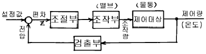
- 조절부
- 조작부
- 검출부
- 제어대상
(정답률: 47%)
47. 공항에 수색레이더(SRE)와 정측레이더(PAR)의 두 레이더가 설치된 항법 보조장치는?
- 거리측정 장치
- 고도측정 장치
- ILS 장치
- 지상제어 진입 장치(GCA)
(정답률: 57%)
48. 한 조를 이루는 지상국에서 펄스 대신에 연속파를 발사하여 수신장소에서는 그 위상차를 이용하여 거리차를 알아내는 쌍곡선 항법을 유럽에서 사용했다. 이를 무엇이라고 하는가?
- 데카(decca)
- 로오란(Loran A)
- TACAN(tactial air navigation)
- AN 레인지(AN range)
(정답률: 52%)
49. 전자 냉동기는 다음 어떤 효과를 응용한 것인가?
- 제에백 효과(Seebeck effect)
- 펠티어 효과(Peltier effect)
- 톰슨 효과(Thomson effect)
- 주울 효과(Joule effect)
(정답률: 83%)
50. 아래 그림은 태양 전지의 구조도이다. 음극단자가 연결된 A를 구성하는 물질로서 가장 적합한 것은?
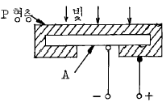
- 셀렌
- 철
- N형 실리콘판
- 붕소
(정답률: 75%)
51. 수신기의 성능에서 종합특성이 아닌 것은?
- 감도
- 충실도
- 선택도
- 증폭도
(정답률: 54%)
52. 라디오 수신기의 증폭기에서 중역대 증폭도를 A라 하면 저역차단 주파수의 증폭도는 A의 몇 배인가?
- 2
- 1/2
- √2
- 1/√2
(정답률: 41%)
53. 다음 블록도는 FM 수신기의 계통도이다. 빈칸 A, B에 해당하는 명칭은?
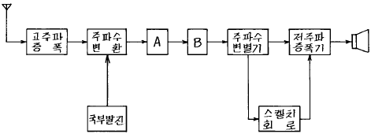
- A = 중간 주파 증폭기, B = 저주파 증폭기
- A = 고주파 증폭기, B = 진폭 제한기
- A = 중간 주파 증폭기, B = 진폭 제한기
- A = 고주파 증폭기, B = 검파기
(정답률: 68%)
54. 비디오 헤드가 오염되었을 때 사용되는 클리이닝(cleaning)으로 가장 적당한 것은?
- 톨루엔
- 벤젠
- 휘발유
- 메타놀
(정답률: 63%)
55. AVC의 작용으로 옳은 것은?
- 주파수 조정 작용
- 잡음 억제 작용
- 파형 교정 작용
- 이득 조정 작용
(정답률: 35%)
56. -80[㏈]의 감도를 가진 마이크로폰에 1[μ bar]의 음압을 주었을 때 출력전압은 몇[㎷]인가?
- 10
- 1
- 0.1
- 0.01
(정답률: 45%)
57. 상보 대칭식 SEPP 회로에서는 트랜지스터 특유의 크로스오우버 일그러짐(Crossover distortion)이 생긴다. 이것을 없애기 위한 방법은?
- A급 증폭을 시킨다.
- B급 증폭을 시킨다.
- AB급 증폭을 시킨다.
- C급 증폭을 시킨다.
(정답률: 40%)
58. VTR의 영상헤드는 회전 운동을 하고 있다. 어떤 수단을 통하여 안전하게 영상 신호를 전달하는가?
- 용량 결합
- 빛 센서에 의한 결합
- 로우타리 트랜스에 의한 결합
- 순금 슬립 링에 의한 결합
(정답률: 34%)
59. 자기 녹음기에서 재생헤드의 위치가 정상보다 비스듬히 놓여져 있을때 나타나는 증상은?
- 저음역이 크게 감쇄된다.
- 중음역이 감쇄된다.
- 고음역이 크게 감쇄된다.
- 전반적으로 음량이 줄어든다.
(정답률: 52%)
60. 일반적으로 수우퍼 헤테로다인 수신기에서 주파수 변환회로의 이상적인 변환 이득은?
- 낮을수록 좋다.
- 클수록 좋다.
- 중간 정도가 좋다.
- 별 관계가 없다.
(정답률: 70%)